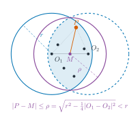
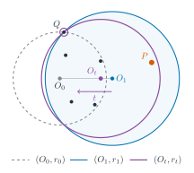
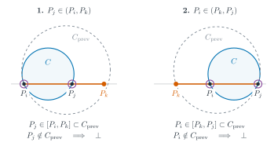
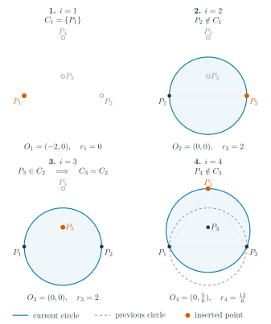
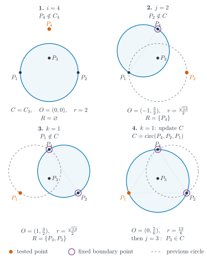
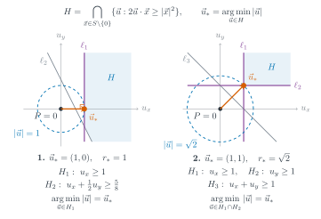

OI Wiki · prijevod · Računska geometrijaOI Wiki · translation · Computational geometry
Najmanja obuhvatna kružnicaSmallest enclosing circle
Sadržaj
Uvod
Za \(n~(n\ge 1)\) točaka \(P_1,P_2,\cdots,P_n\) u ravnini treba pronaći kružnicu najmanjeg polumjera takvu da nijedna točka ne leži izvan nje. Ta se kružnica zove najmanja obuhvatna kružnica (Minimum Enclosing Circle, MEC) tih točaka.
U ovom članku dopuštamo kružnice polumjera \(0\): kad se sve točke podudaraju u jednoj točki \(P\), smatramo da je najmanja obuhvatna kružnica tih \(n\) točaka kružnica sa središtem \(P\) i polumjerom \(0\).
Lako se vidi da je najmanja obuhvatna kružnica jedinstvena.
Dokaz
Pretpostavimo da postoje dvije različite najmanje obuhvatne kružnice sa središtima \(O_1,O_2\) i jednakim polumjerom \(r\). Neka je \(M\) polovište dužine \(O_1O_2\); tada za svaku točku \(P\) vrijedi
Dakle, sa središtem u \(M\) možemo konstruirati obuhvatnu kružnicu manjeg polumjera, što je kontradikcija.

Postupak
Uobičajen način rješavanja problema najmanje obuhvatne kružnice je Welzlov algoritam1, zasnovan na randomiziranom inkrementalnom algoritmu. Ključna je operacija algoritma: točke najprije nasumično promiješamo, zatim održavamo najmanju obuhvatnu kružnicu skupa točaka i redom dodajemo nove točke u skup. Iako algoritam sadrži tri razine petlji, očekivana vremenska složenost mu je \(O(n)\).
Dodavanje jedne točke
Najprije razmotrimo što se događa kad u skup točaka koji trenutačno održavamo dodamo novu točku. Neka je trenutačna kružnica \(C\) najmanja obuhvatna kružnica već obrađenog skupa točaka, a sad dodajemo točku \(P\).
- Ako je \(P\) unutar \(C\) ili na njezinu obodu, \(C\) je i dalje najmanja obuhvatna kružnica.
- Ako je \(P\) izvan \(C\), tada \(P\) sigurno leži na obodu nove najmanje obuhvatne kružnice, pa problem možemo svesti na potproblem: uz poznato da je \(P\) na obodu, pronaći najmanju obuhvatnu kružnicu.
Zašto nova točka izvan kružnice sigurno leži na obodu nove kružnice
Neka su središta stare i nove kružnice \(O_0,O_1\), a polumjeri \(r_0,r_1\); tada je \(r_0\le r_1\). Pretpostavimo da je \(P\) strogo unutar nove kružnice. Za \(0<t<1\) promotrimo kružnicu \((O_t,r_t)\) za koju vrijedi
i uzmimo dovoljno mali \(t\) da \(P\) i dalje bude unutar kružnice \((O_t,r_t)\). Za svaku točku \(Q\) imamo
Dakle, točke starog skupa i dalje su obuhvaćene kružnicom \((O_t,r_t)\), a točke koje su prije bile istodobno fiksirane na obodu kružnice \((O_0,r_0)\) i na obodu kružnice \((O_1,r_1)\) i dalje su na obodu kružnice \((O_t,r_t)\). Budući da je \(P\) unutar kružnice \((O_t,r_t)\), kružnica \((O_t,r_t)\) valjana je obuhvatna kružnica, ali vrijedi \(r_t<r_1\), što je u kontradikciji s optimalnošću nove kružnice.

Gornji zaključak vrijedi i u slučaju kad dodajemo novu točku dok su jedna ili dvije točke već fiksirane na obodu.
Tri razine petlji
Razmotrimo sada glavni dio Welzlova algoritma. Ulazne točke nasumično promiješamo s jednakim vjerojatnostima, i dalje ih označavamo \(P_1,P_2,\cdots,P_n\) te stavljamo \(S_i=\{P_1,\cdots,P_i\}\), \(S_0=\varnothing\). Održavamo trenutačnu kružnicu \(C\); na početku joj je središte \(P_1\), polumjer \(0\) i nema fiksiranih točaka na obodu.
- (Prva razina petlje) Bez fiksiranih točaka na obodu: redom prolazimo \(i=2,\cdots,n\). Ako je \(P_i\) već unutar \(C\), nastavljamo; inače fiksiramo \(P_i\) na obodu i ponovno tražimo najmanju kružnicu koja obuhvaća \(S_{i-1}\).
- (Druga razina petlje) S jednom fiksiranom točkom oboda \(P_i\): najprije \(C\) postavimo na kružnicu s promjerom \(P_iP_1\), a zatim redom prolazimo \(j=2,\cdots,i-1\). Ako je \(P_j\) već unutar \(C\), nastavljamo; inače na obodu fiksiramo još i \(P_j\) te ponovno tražimo najmanju kružnicu koja obuhvaća \(S_{j-1}\).
- (Treća razina petlje) S dvjema fiksiranim točkama oboda \(P_i,P_j\): najprije \(C\) postavimo na kružnicu s promjerom \(P_iP_j\), a zatim redom prolazimo \(k=1,\cdots,j-1\). Ako je \(P_k\) već unutar \(C\), nastavljamo; inače \(C\) ažuriramo na opisanu kružnicu trokuta \(\triangle P_iP_jP_k\).
Ovdje „unutar kružnice” uvijek uključuje i obod, a trenutačna kružnica u svakom retku najmanja je kružnica koja zadovoljava odgovarajuća ograničenja. Na kraju treće razine petlje obuhvaćen je \(S_{j-1}\), a uz \(P_j\) na obodu to je upravo odgovor koji treba drugoj razini petlje; na kraju druge razine petlje analogno dobivamo odgovor koji treba prvoj razini. Izvedivost unutarnjih petlji jamče vanjske petlje, a lako se vidi i da pri ažuriranju u trećoj razini petlje tri točke \(P_iP_jP_k\) nisu kolinearne, pa je algoritam ispravan.
Zašto pri ažuriranju najmanje kružnice u trećoj razini petlje tri točke nisu kolinearne
Budući da je \(P_j\) bio izvan kružnice koja prolazi kroz \(P_i\), vrijedi \(P_i\ne P_j\). Ako su \(P_i,P_j,P_k\) kolinearne i \(P_k\) je izvan trenutačne kružnice \(C\), tada \(P_k\) mora biti izvan dužine \(P_iP_j\). Razlikujemo dva slučaja:
- Ako je \(P_j\) između \(P_i,P_k\), tada je u trenutku kad druga razina petlje dođe do \(P_j\) trenutačna najmanja kružnica prolazila kroz \(P_i\) i obuhvaćala \(P_k\) iz \(S_{j-1}\), pa je obuhvaćala i \(P_j\) na dužini \(P_iP_k\). To je u kontradikciji s time da je \(P_j\) pokrenuo treću razinu petlje.
- Ako je \(P_i\) između \(P_j,P_k\), tada je u trenutku kad prva razina petlje dođe do \(P_i\) trenutačna najmanja kružnica obuhvaćala \(P_j,P_k\) iz \(S_{i-1}\), pa je obuhvaćala i \(P_i\) na dužini \(P_jP_k\). To je u kontradikciji s time da je \(P_i\) pokrenuo drugu razinu petlje.

Računanje opisane kružnice
Operacije računalne geometrije u Welzlovu algoritmu prilično su standardne: uglavnom su to određivanje položaja točke u odnosu na kružnicu, kružnica kojoj je promjer zadan dvjema točkama i kružnica opisana trima točkama. Prve dvije preskačemo, a usredotočimo se na treću.
Za tri nekolinearne točke \(A=(x_A,y_A), B=(x_B,y_B), C=(x_C,y_C)\) središte opisane kružnice sjecište je simetrala dužina \(AB\) i \(AC\) i može se izračunati metodom iz odjeljka Sjecište dvaju pravaca.
Možemo i izravno postaviti i riješiti jednadžbe. Neka je središte opisane kružnice \(O=(x,y)\); tada
Označimo
pa vrijedi
Kad izračunamo središte, uzmemo \(r=|O-A|\). Nazivnik \(A_1B_2-A_2B_1\) različit od nule odgovara tomu da tri točke nisu kolinearne. Kad su tri točke gotovo kolinearne, pogreška zaokruživanja ove metode može se jako povećati, pa u praksi treba posebno pripaziti.
Primjer
Neka su točke \(P_1=(-2,0)\), \(P_2=(2,0)\), \(P_3=(0,1)\), \(P_4=(0,3)\). Označimo s \(C_i\) najmanju obuhvatnu kružnicu nakon obrade prvih \(i\) točaka; slika dolje prikazuje rezultate vanjske petlje. Puna plava linija označava trenutačnu kružnicu, siva isprekidana linija kružnicu prije ažuriranja, narančasta puna točka točku dodanu u ovom koraku, a siva prazna točka točku koja još nije dodana.

Na početku je polumjer \(0\). Nakon dodavanja \(P_2\) trenutačna obuhvatna kružnica ima promjer \(P_1P_2\). \(P_3\) je unutar kružnice, pa se pri njezinu dodavanju kružnica ne mijenja. \(P_4\) je izvan kružnice, pa je potrebno ponovno računanje. Nakon ponovnog računanja središte je \((0,5/6)\), polumjer \(13/6\), točke \(P_1,P_2,P_4\) su na obodu, a \(P_3\) je unutar kružnice.
U nastavku raščlanjujemo postupak ponovnog računanja za \(i=4\). Narančasta točka označava točku koja se trenutačno provjerava, ljubičasti vanjski prsten označava točke oboda fiksirane u ovoj razini petlje, a njihov skup označavamo s \(R\). Puna plava linija i siva isprekidana linija označavaju trenutačnu kružnicu odnosno kružnicu iz prethodnog koraka.

- \(P_4\) je izvan stare kružnice \(C_3\), ulazimo u drugu razinu petlje.
- Fiksiramo \(P_4\) i najprije uzmemo kružnicu s promjerom \(P_4P_1\). Pri provjeri \(j=2\) ustanovimo da je \(P_2\) izvan te kružnice, ulazimo u treću razinu petlje.
- Fiksiramo \(P_4,P_2\) i trenutačnu kružnicu postavimo na kružnicu s promjerom \(P_4P_2\). Pri provjeri \(k=1\) ustanovimo da je \(P_1\) i dalje izvan kružnice.
- Ažuriramo na opisanu kružnicu trokuta \(\triangle P_4P_2P_1\) i završavamo treću razinu petlje. Po povratku u drugu razinu petlje točka \(P_3\) koja odgovara \(j=3\) već je unutar kružnice, pa je preskačemo i dobivamo \(C_4\).
Privremene kružnice tijekom ponovnog računanja moraju zadovoljavati samo ograničenja trenutačnog potproblema, pa ne obuhvaćaju nužno sve točke već obrađene na višoj razini. Na primjer, kružnica na drugoj podslici još ne obuhvaća \(P_2\), a kružnica na trećoj podslici još ne obuhvaća \(P_1\) — upravo je to razlog ulaska u sljedeću razinu ili ažuriranja opisane kružnice.
Analiza složenosti
Prema tijeku algoritma gornja je granica vremenske složenosti u najgorem slučaju \(O(n^3)\), no nasumično miješanje smanjuje vjerojatnost ulaska u unutarnje petlje, pa očekivana vremenska složenost pada na \(O(n)\).
Najmanju obuhvatnu kružnicu određuju najviše tri točke: kad postoji samo jedna različita točka, polumjer je \(0\); inače je najmanja obuhvatna kružnica određena parom krajnjih točaka promjera ili trima nekolinearnim točkama. Nakon fiksiranja jedne točke oboda dovoljne su još najviše dvije točke da bi se odredilo optimalno rješenje.
Zašto su nakon fiksiranja jedne točke oboda potrebne još najviše dvije točke
Translatiramo fiksiranu točku u ishodište. Neka je vektor središta \(\vec{u}\); tada je polumjer te kružnice \(|\vec{u}|\). Uvjet da je točka \(x\) obuhvaćena ekvivalentan je uvjetu
Svaka točka osim ishodišta nameće središtu jedno ograničenje u obliku poluravnine; dopustiva središta leže u presjeku tih poluravnina, a optimalno je središte točka tog presjeka najbliža ishodištu. U dvodimenzionalnom prostoru dovoljno je zadržati najviše dva aktivna ograničenja da ta najbliža točka ostane nepromijenjena.2 Dakle, osim fiksirane točke dovoljno je zadržati najviše još dvije ulazne točke da optimalno rješenje ostane isto.
Na slici dolje plavo područje \(H\) označava sva dopustiva središta, a narančasta točka \(\vec{u}_*\) točka je tog područja najbliža ishodištu. Uklanjanje ograničenja koja odgovaraju sivim rubovima ne mijenja optimalno središte.

Stoga točka čije bi uklanjanje promijenilo optimalnu kružnicu sigurno pripada svakom takvom skupu određujućih točaka. Bez fiksiranih točaka oboda takvih točaka ima najviše tri; s jednom fiksiranom točkom oboda najviše dvije.
Provedimo sada analizu unatrag (backward analysis). Fiksirajmo najprije \(P_i\) i neuređeni skup točaka \(S_j\) u nekom koraku druge razine petlje. Budući da je početni redoslijed slučajan, \(P_j\) je zapravo točka odabrana iz \(S_j\) s jednakom vjerojatnošću. Dodavanje \(P_j\) pokreće treću razinu petlje samo ako bi uklanjanje \(P_j\) promijenilo ograničenu optimalnu kružnicu, pa je vjerojatnost pokretanja najviše \(\min(1,2/j)\). Prolazak treće razine petlje traje \(O(j)\), pa je očekivano vrijeme cijele druge razine petlje
Slično, fiksirajmo neuređeni skup točaka \(S_i\) prve razine petlje; točaka koje pokreću ponovno računanje u drugoj razini petlje ima najviše tri, pa je vjerojatnost najviše \(\min(1,3/i)\). Nakon fiksiranja te točke relativni redoslijed prethodnih točaka i dalje je slučajan, pa je uvjetno očekivano vrijeme tog ponovnog računanja \(O(i)\). Dodamo li trošak svake provjere i trošak početnog miješanja, ukupna je očekivana vremenska složenost
Primjer zadatka
Luogu P1742 最小圆覆盖 (Najmanja obuhvatna kružnica)
Zadano je \(N\) točaka; treba pronaći najmanju kružnicu koja sadrži sve točke te ispisati njezin polumjer i koordinate središta.
Sljedeća implementacija izravno održava središte i polumjer, a redoslijed točaka miješa pomoću std::shuffle. Tri razine petlji redom odgovaraju potproblemima s nula, jednom i dvije fiksirane točke oboda iz prethodnog teksta, a geto računa središte opisane kružnice triju točaka.
Referentna implementacija
#include <algorithm>
#include <cmath>
#include <cstdio>
#include <cstring>
#include <iostream>
#include <random>
using namespace std;
int n;
double r;
struct point {
double x, y;
} p[100005], o;
double sqr(double x) { return x * x; }
double dis(point a, point b) { return sqrt(sqr(a.x - b.x) + sqr(a.y - b.y)); }
bool cmp(double a, double b) { return fabs(a - b) < 1e-8; }
point geto(point a, point b, point c) {
double a1, a2, b1, b2, c1, c2;
point ans;
a1 = 2 * (b.x - a.x), b1 = 2 * (b.y - a.y),
c1 = sqr(b.x) - sqr(a.x) + sqr(b.y) - sqr(a.y);
a2 = 2 * (c.x - a.x), b2 = 2 * (c.y - a.y),
c2 = sqr(c.x) - sqr(a.x) + sqr(c.y) - sqr(a.y);
if (cmp(a1, 0)) {
ans.y = c1 / b1;
ans.x = (c2 - ans.y * b2) / a2;
} else if (cmp(b1, 0)) {
ans.x = c1 / a1;
ans.y = (c2 - ans.x * a2) / b2;
} else {
ans.x = (c2 * b1 - c1 * b2) / (a2 * b1 - a1 * b2);
ans.y = (c2 * a1 - c1 * a2) / (b2 * a1 - b1 * a2);
}
return ans;
}
int main() {
scanf("%d", &n);
for (int i = 1; i <= n; i++) scanf("%lf%lf", &p[i].x, &p[i].y);
mt19937 rnd(random_device{}());
shuffle(p + 1, p + n + 1, rnd);
o = p[1];
for (int i = 1; i <= n; i++) {
if (dis(o, p[i]) < r || cmp(dis(o, p[i]), r)) continue;
o.x = (p[i].x + p[1].x) / 2;
o.y = (p[i].y + p[1].y) / 2;
r = dis(p[i], p[1]) / 2;
for (int j = 2; j < i; j++) {
if (dis(o, p[j]) < r || cmp(dis(o, p[j]), r)) continue;
o.x = (p[i].x + p[j].x) / 2;
o.y = (p[i].y + p[j].y) / 2;
r = dis(p[i], p[j]) / 2;
for (int k = 1; k < j; k++) {
if (dis(o, p[k]) < r || cmp(dis(o, p[k]), r)) continue;
o = geto(p[i], p[j], p[k]);
r = dis(o, p[i]);
}
}
}
printf("%.10lf\n%.10lf %.10lf", r, o.x, o.y);
return 0;
}
Zadaci za vježbu
Literatura i napomene
- Smallest-circle problem - Wikipedia
- Minimum Enclosing Circle - Algorithms for Competitive Programming
- Computational Geometry Lecture 4: Smallest enclosing circles and more - University of Florida
-
Welzl, E. (1991). Smallest enclosing disks (balls and ellipsoids). In: Maurer, H. (eds) New Results and New Trends in Computer Science. Lecture Notes in Computer Science, vol 555. Springer, Berlin, Heidelberg. ↩
-
Vidi odgovarajući sadržaj u članku Linearno programiranje. ↩
Contents
Introduction
Given \(n~(n\ge 1)\) points \(P_1,P_2,\cdots,P_n\) in the plane, find a circle of minimum radius such that no point lies outside the circle. This circle is called the smallest enclosing circle (Minimum Enclosing Circle, MEC) of these points.
In this article we allow circles of radius \(0\): when all points coincide at a single point \(P\), we consider the smallest enclosing circle of these \(n\) points to be the circle with center \(P\) and radius \(0\).
It is easy to see that the smallest enclosing circle is unique.
Proof
Suppose there are two different smallest enclosing circles with centers \(O_1,O_2\) and the same radius \(r\). Let \(M\) be the midpoint of \(O_1O_2\); then for every point \(P\) we have
Hence, with \(M\) as the center we can construct an enclosing circle of smaller radius, a contradiction.
Procedure
The common approach to the smallest enclosing circle problem is Welzl's algorithm1, which is based on the randomized incremental algorithm. The core operation of the algorithm is: first shuffle the points randomly, then maintain the smallest enclosing circle of a point set while adding new points to the set one by one. Although the algorithm contains three nested loops, its expected time complexity is \(O(n)\).
Adding a point
We first consider what happens when a new point is added to the point set currently maintained. Let the current circle \(C\) be the smallest enclosing circle of the processed point set, and now add the point \(P\).
- If \(P\) is inside \(C\) or on its circumference, \(C\) is still the smallest enclosing circle.
- If \(P\) is outside \(C\), then \(P\) must lie on the circumference of the new smallest enclosing circle, so the problem can be reduced to the subproblem: given that \(P\) is on the circumference, find the smallest enclosing circle.
Why a new point outside the circle must lie on the circumference of the new circle
Let the centers of the old and new circles be \(O_0,O_1\) and their radii \(r_0,r_1\); then \(r_0\le r_1\). Suppose \(P\) lies strictly inside the new circle. For \(0<t<1\), consider the circle \((O_t,r_t)\) satisfying
and take \(t\) sufficiently small so that \(P\) is still inside the circle \((O_t,r_t)\). For any point \(Q\) we have
So the points of the old set are still covered by the circle \((O_t,r_t)\), and the points that were previously fixed simultaneously on the circumference of the circle \((O_0,r_0)\) and on the circumference of the circle \((O_1,r_1)\) are still on the circumference of the circle \((O_t,r_t)\). Since \(P\) is inside the circle \((O_t,r_t)\), the circle \((O_t,r_t)\) is a valid enclosing circle, but we have \(r_t<r_1\), contradicting the optimality of the new circle.
The conclusion above also applies when a new point is added while one or two points are already fixed on the circumference.
Three nested loops
Next we consider the main body of Welzl's algorithm. We shuffle the input points uniformly at random, still denote them \(P_1,P_2,\cdots,P_n\), and let \(S_i=\{P_1,\cdots,P_i\}\), \(S_0=\varnothing\). We maintain the current circle \(C\); initially its center is \(P_1\), its radius is \(0\), and there are no fixed points on the circumference.
- (First loop) No points fixed on the circumference: enumerate \(i=2,\cdots,n\) in order. If \(P_i\) is already inside \(C\), continue; otherwise fix \(P_i\) on the circumference and recompute the smallest circle covering \(S_{i-1}\).
- (Second loop) One fixed circumference point \(P_i\): first set \(C\) to the circle with diameter \(P_iP_1\), then enumerate \(j=2,\cdots,i-1\) in order. If \(P_j\) is already inside \(C\), continue; otherwise also fix \(P_j\) on the circumference and recompute the smallest circle covering \(S_{j-1}\).
- (Third loop) Two fixed circumference points \(P_i,P_j\): first set \(C\) to the circle with diameter \(P_iP_j\), then enumerate \(k=1,\cdots,j-1\) in order. If \(P_k\) is already inside \(C\), continue; otherwise update \(C\) to the circumscribed circle of \(\triangle P_iP_jP_k\).
Here "inside the circle" always includes the circumference, and the current circle in each line is the smallest circle satisfying the corresponding constraints. When the third loop ends, \(S_{j-1}\) is covered, and together with \(P_j\) on the circumference this is exactly the answer needed by the second loop; when the second loop ends, we likewise obtain the answer needed by the first loop. The feasibility of the inner loops is guaranteed by the outer loops, and it is easy to see that when the third loop updates, the three points \(P_iP_jP_k\) are not collinear, so the algorithm is correct.
Why the three points are not collinear when the third loop updates the smallest circle
Since \(P_j\) was outside a circle passing through \(P_i\), we have \(P_i\ne P_j\). If \(P_i,P_j,P_k\) are collinear and \(P_k\) is outside the current circle \(C\), then \(P_k\) must lie outside the segment \(P_iP_j\). We distinguish two cases:
- If \(P_j\) lies between \(P_i,P_k\), then when the second loop reached \(P_j\), the current smallest circle passed through \(P_i\) and covered \(P_k\) in \(S_{j-1}\), hence it also covered \(P_j\) on the segment \(P_iP_k\). This contradicts \(P_j\) triggering the third loop.
- If \(P_i\) lies between \(P_j,P_k\), then when the first loop reached \(P_i\), the current smallest circle covered \(P_j,P_k\) in \(S_{i-1}\), hence it also covered \(P_i\) on the segment \(P_jP_k\). This contradicts \(P_i\) triggering the second loop.
Computing the circumscribed circle
The computational geometry operations involved in Welzl's algorithm are fairly standard: mainly determining the position of a point relative to a circle, the circle with a given diameter defined by two points, and the circumscribed circle through three points. We skip the first two and focus on the third.
Given three non-collinear points \(A=(x_A,y_A), B=(x_B,y_B), C=(x_C,y_C)\), the center of their circumscribed circle is the intersection of the perpendicular bisectors of the segments \(AB\) and \(AC\), which can be computed with the method in Finding the intersection of two lines.
We can also set up and solve the equations directly. Let the circumcenter be \(O=(x,y)\); then
Let
then
After computing the center, take \(r=|O-A|\). A nonzero denominator \(A_1B_2-A_2B_1\) corresponds to the three points being non-collinear. When the three points are nearly collinear, the floating-point error of this method may be greatly amplified, which requires special attention in practice.
Example
Let the points be \(P_1=(-2,0)\), \(P_2=(2,0)\), \(P_3=(0,1)\), \(P_4=(0,3)\). Denote by \(C_i\) the smallest enclosing circle after processing the first \(i\) points; the figure below shows the results of the outer loop. The solid blue line denotes the current circle, the gray dashed line the circle before the update, the solid orange point the point added in this round, and the hollow gray point a point not yet added.
Initially the radius is \(0\). After adding \(P_2\), the current enclosing circle has diameter \(P_1P_2\). \(P_3\) is inside the circle, so the circle does not change when it is added. \(P_4\) lies outside the circle and a recomputation is required. After the recomputation, the center is \((0,5/6)\) and the radius is \(13/6\); \(P_1,P_2,P_4\) are on the circumference and \(P_3\) is inside the circle.
Below we expand the recomputation process for \(i=4\). The orange point denotes the point currently being checked, the purple outer ring marks the circumference points fixed in this loop level, whose set is denoted by \(R\). The solid blue line and the gray dashed line denote the current circle and the circle from the previous step, respectively.
- \(P_4\) is outside the old circle \(C_3\); enter the second loop.
- Fix \(P_4\) and first take the circle with diameter \(P_4P_1\). When checking \(j=2\), we find that \(P_2\) is outside this circle; enter the third loop.
- Fix \(P_4,P_2\) and set the current circle to the circle with diameter \(P_4P_2\). When checking \(k=1\), we find that \(P_1\) is still outside the circle.
- Update to the circumscribed circle of \(\triangle P_4P_2P_1\), completing the third loop. Back in the second loop, the point \(P_3\) corresponding to \(j=3\) is already inside the circle, so it is skipped, and we obtain \(C_4\).
The temporary circles during the recomputation only need to satisfy the constraints of the current subproblem, so they do not necessarily cover all the points already processed at the upper level. For example, the circle in the second subfigure does not yet cover \(P_2\), and the circle in the third subfigure does not yet cover \(P_1\); this is exactly the reason for entering the next level or updating the circumscribed circle.
Complexity analysis
From the procedure, the worst-case upper bound on the time complexity of this algorithm is \(O(n^3)\), but the random shuffle reduces the probability of entering the inner loops, bringing the expected time complexity down to \(O(n)\).
The smallest enclosing circle is determined by at most three points: when there is only one distinct point the radius is \(0\); otherwise the smallest enclosing circle is determined by a pair of diameter endpoints or by three non-collinear points. After fixing one circumference point, at most two more points are needed to determine the optimal solution.
Why at most two more points are needed after fixing one circumference point
Translate the fixed point to the origin. Let the center vector be \(\vec{u}\); then the radius of the circle is \(|\vec{u}|\). The condition that a point \(x\) is covered is equivalent to
Every point other than the origin imposes a half-plane constraint on the center; the feasible centers lie in the intersection of these half-planes, and the optimal center is the point of this intersection closest to the origin. In two-dimensional space, keeping at most two active constraints is enough to keep this closest point unchanged.2 Therefore, besides the fixed point, keeping at most two more input points suffices to keep the optimal solution unchanged.
In the figure below, the blue region \(H\) denotes all feasible centers, and the orange point \(\vec{u}_*\) is the point of the region closest to the origin. Removing the constraints corresponding to the gray boundaries does not change the optimal center.
Therefore, a point whose removal changes the optimal circle must belong to every such set of determining points. With no fixed circumference point there are at most three such points; with one fixed circumference point there are at most two.
Now we perform a backward analysis. First fix \(P_i\) and the unordered point set \(S_j\) at some step of the second loop. Since the initial order is random, \(P_j\) is effectively a point chosen uniformly at random from \(S_j\). Adding \(P_j\) triggers the third loop only if removing \(P_j\) would change the constrained optimal circle, so the probability of triggering is at most \(\min(1,2/j)\). The third-loop scan takes \(O(j)\) time, so the expected time of the whole second loop is
Similarly, fix the unordered point set \(S_i\) of the first loop; there are at most three points that trigger a second-loop recomputation, so the probability is at most \(\min(1,3/i)\). After fixing this point, the relative order of the previous points is still random, so the conditional expected time of this recomputation is \(O(i)\). Adding the cost of each check and the cost of the initial shuffle, the total expected time complexity is
Example problem
Luogu P1742 最小圆覆盖 (Smallest Enclosing Circle)
Given \(N\) points, find the smallest circle containing all the points, and output the radius and the coordinates of the center.
The implementation below maintains the center and radius directly and shuffles the order of the points using std::shuffle. The three nested loops correspond to the subproblems with zero, one and two fixed circumference points described above, and geto computes the circumcenter of three points.
Reference implementation
#include <algorithm>
#include <cmath>
#include <cstdio>
#include <cstring>
#include <iostream>
#include <random>
using namespace std;
int n;
double r;
struct point {
double x, y;
} p[100005], o;
double sqr(double x) { return x * x; }
double dis(point a, point b) { return sqrt(sqr(a.x - b.x) + sqr(a.y - b.y)); }
bool cmp(double a, double b) { return fabs(a - b) < 1e-8; }
point geto(point a, point b, point c) {
double a1, a2, b1, b2, c1, c2;
point ans;
a1 = 2 * (b.x - a.x), b1 = 2 * (b.y - a.y),
c1 = sqr(b.x) - sqr(a.x) + sqr(b.y) - sqr(a.y);
a2 = 2 * (c.x - a.x), b2 = 2 * (c.y - a.y),
c2 = sqr(c.x) - sqr(a.x) + sqr(c.y) - sqr(a.y);
if (cmp(a1, 0)) {
ans.y = c1 / b1;
ans.x = (c2 - ans.y * b2) / a2;
} else if (cmp(b1, 0)) {
ans.x = c1 / a1;
ans.y = (c2 - ans.x * a2) / b2;
} else {
ans.x = (c2 * b1 - c1 * b2) / (a2 * b1 - a1 * b2);
ans.y = (c2 * a1 - c1 * a2) / (b2 * a1 - b1 * a2);
}
return ans;
}
int main() {
scanf("%d", &n);
for (int i = 1; i <= n; i++) scanf("%lf%lf", &p[i].x, &p[i].y);
mt19937 rnd(random_device{}());
shuffle(p + 1, p + n + 1, rnd);
o = p[1];
for (int i = 1; i <= n; i++) {
if (dis(o, p[i]) < r || cmp(dis(o, p[i]), r)) continue;
o.x = (p[i].x + p[1].x) / 2;
o.y = (p[i].y + p[1].y) / 2;
r = dis(p[i], p[1]) / 2;
for (int j = 2; j < i; j++) {
if (dis(o, p[j]) < r || cmp(dis(o, p[j]), r)) continue;
o.x = (p[i].x + p[j].x) / 2;
o.y = (p[i].y + p[j].y) / 2;
r = dis(p[i], p[j]) / 2;
for (int k = 1; k < j; k++) {
if (dis(o, p[k]) < r || cmp(dis(o, p[k]), r)) continue;
o = geto(p[i], p[j], p[k]);
r = dis(o, p[i]);
}
}
}
printf("%.10lf\n%.10lf %.10lf", r, o.x, o.y);
return 0;
}
Exercises
References and notes
- Smallest-circle problem - Wikipedia
- Minimum Enclosing Circle - Algorithms for Competitive Programming
- Computational Geometry Lecture 4: Smallest enclosing circles and more - University of Florida
-
Welzl, E. (1991). Smallest enclosing disks (balls and ellipsoids). In: Maurer, H. (eds) New Results and New Trends in Computer Science. Lecture Notes in Computer Science, vol 555. Springer, Berlin, Heidelberg. ↩
-
See the related content in Linear programming. ↩